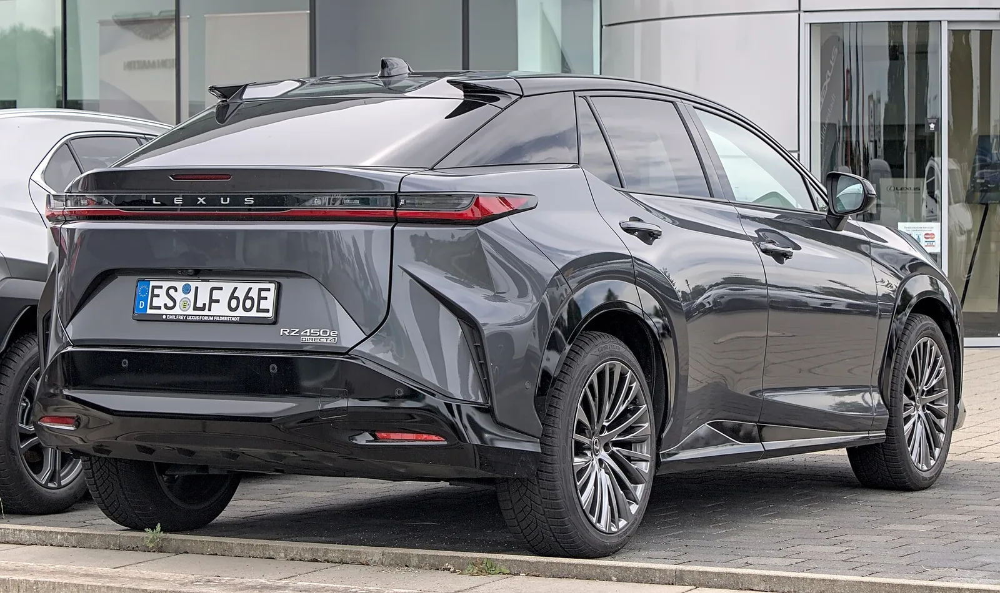
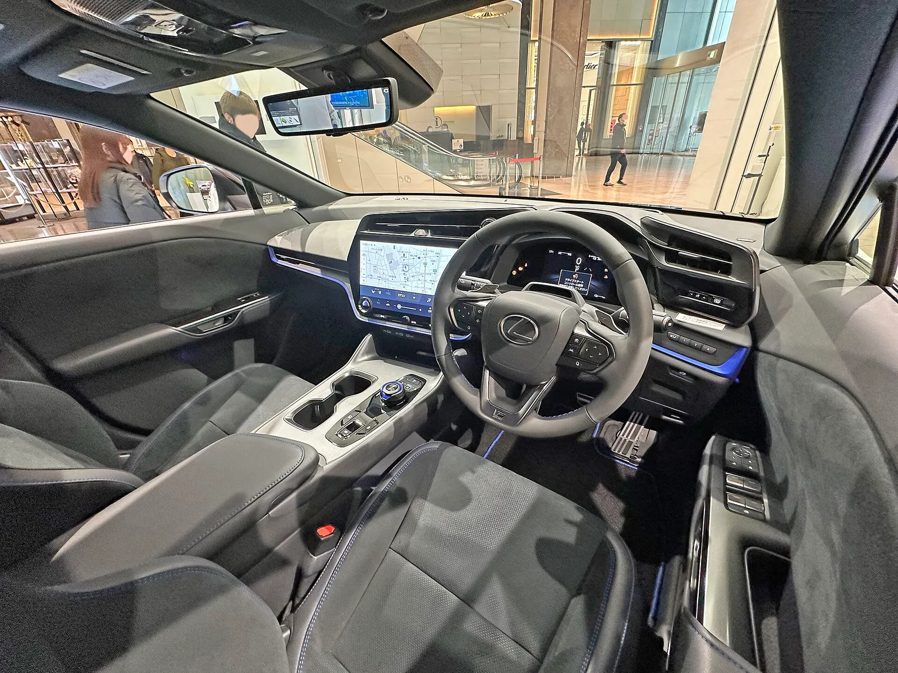
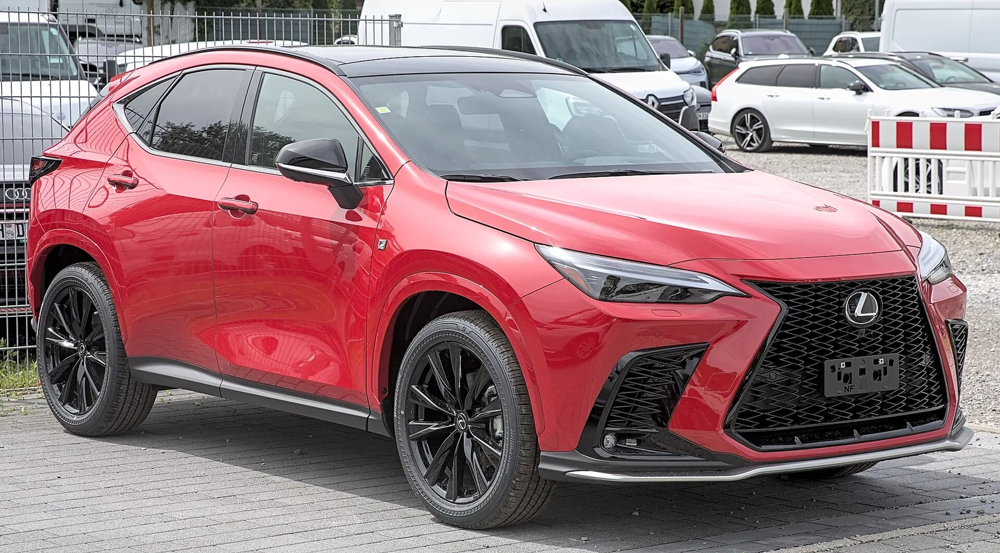

▲ RZ는 렉서스의 전용 플랫폼 순수전기 SUV다 ⓒ Wikimedia Commons
렉서스 RZ의 국내 가격은 슈프림 8,480만 원, 럭셔리 9,250만 원입니다.
그동안 이 차는 렉서스 라인업의 한쪽 끝에 있었습니다. 하이브리드가 주력이고 전기차는 선택지 하나였습니다.
그런데 그 구도가 바뀌고 있습니다. 렉서스가 순수 가솔린 모델을 지우기 시작했기 때문입니다.
1. 가격표
| 트림 | 가격 |
|---|---|
| 슈프림(Supreme) | 8,480만 원 |
| 럭셔리(Luxury) | 9,250만 원 |
두 트림의 차이는 770만 원입니다.
이 가격대에서 확인할 것은 전기차 보조금입니다. 국내 보조금은 차량 가격 구간에 따라 지급률이 달라지고, 일정 금액을 넘으면 지급되지 않습니다.
| 항목 | 내용 |
|---|---|
| 보조금 지급 여부 | 가격 구간과 친환경차 등재 여부를 함께 확인 |
| 지자체 보조금 | 거주 지역에 따라 금액이 다르다 |
| 세제 | 친환경차 취득세 감면 조건 |
| 충전 환경 | 완속 충전이 가능한지 — 이용자 62.5%가 자택·공동주택 충전 |
앞서 다룬 지커 7X 울트라 사례가 참고가 됩니다. 같은 모델이라도 트림에 따라 친환경차 등재 여부가 갈려 보조금이 달라질 수 있습니다.
2. 라인업에서의 위치가 달라진다
렉서스가 순수 가솔린 모델을 순차 단종하기로 했습니다. 다만 여기엔 짚고 갈 전제가 있습니다.
📍 어느 시장 이야기인가
이번 단종 발표는 일본 내수 시장이 출발점입니다. NX250과 NX350은 국내에 출시된 적이 없는 모델로, 한국 소비자에게는 직접적인 변화가 없습니다. 국내에 영향을 주는 것은 현재 판매 중인 LS500입니다. 렉서스는 이 흐름을 글로벌로 확대할 방침이라고 밝혔습니다.
어떤 모델이 어느 시장에서 어떻게 정리되는지 표로 보겠습니다.
| 구분 | 모델 | 국내 판매 | 상태 |
|---|---|---|---|
| 단종 | NX250 (2.5L 자연흡기) | 미출시 | 6월 발표 |
| NX350 (2.4L 터보, 279마력) | 미출시 | 발표 | |
| LS500 (3.5L V6 트윈터보, 422마력) | 판매 중 | 예정 | |
| 유지 | 하이브리드(HEV·PHEV), 순수 전기(BEV) | 판매 중 | — |
| 남는 내연기관 | RX350, LX600, GX550 등 | 일부 | 소수 |
LS500이 빠지면 렉서스코리아가 파는 차는 전부 전동화 모델이 됩니다. 그 안에서 RZ는 유일한 순수 전기 SUV라는 자리를 갖습니다.
다만 이 변화가 RZ의 판매를 자동으로 늘려주지는 않습니다. 하이브리드에서 전기차로 넘어가는 것은 구매자의 선택이고, 그 선택은 충전 환경에 크게 좌우됩니다.

▲ LS500이 빠지면 렉서스코리아 라인업은 전동화 모델만 남는다
3. 렉서스가 전기차에서 늦은 이유
토요타·렉서스는 순수 전기차 전환에서 후발주자로 평가돼 왔습니다.
| 방식 | 토요타의 입장 |
|---|---|
| 하이브리드 | 1997년 프리우스 이후 세계 최대 판매 |
| 순수 전기 | 상대적으로 늦게 진입 |
| 수소 | 미라이 등 병행 추진 |
| 논리 | 멀티 패스웨이 — 지역·용도별로 다른 해법 |
이 전략은 오랫동안 비판받았지만, 최근 흐름에서는 다르게 읽히기도 합니다. 미국과 유럽에서 전기차 수요 증가세가 둔화되고 하이브리드 수요가 늘면서, 하이브리드 라인업이 두터운 쪽이 유리해진 국면이 있었습니다.
다만 순수 가솔린을 지우기 시작했다는 것은 방향 자체는 확정됐다는 뜻입니다. 속도의 문제만 남았습니다.

▲ RZ 450e 실내(일본 사양 우핸들). 국내 판매분은 좌핸들이다 ⓒ Wikimedia Commons
4. 이 가격대의 선택지
| 고려 항목 | 내용 |
|---|---|
| 보조금 | 지급 여부에 따라 실구매가가 수백만 원 갈린다 |
| 충전 속도 | 800V 시스템 여부 — 고속도로 이용이 잦다면 중요 |
| 주행거리 | 국내 인증 기준으로 비교해야 한다 |
| AS망 | 거주 지역 서비스센터 접근성 |
| 잔가 | 전기차는 SOH(배터리 잔존 성능)가 중고 시세를 좌우한다 |
마지막 항목이 전기차 특유의 변수입니다. 내연기관은 주행거리와 연식으로 시세가 정해지지만, 전기차는 배터리 상태가 추가됩니다.

▲ 전기차는 배터리 잔존 성능(SOH)이 중고 시세를 좌우한다

▲ 렉서스는 순수 가솔린을 지우고 전동화 라인업으로 재편 중이다
5. 정리
렉서스 RZ의 국내 가격은 슈프림 8,480만 원, 럭셔리 9,250만 원입니다. 두 트림의 차이는 770만 원입니다.
렉서스가 NX250·NX350·LS500 등 순수 가솔린 모델을 순차 단종하기로 하면서 RZ의 위치가 달라지고 있습니다. LS500이 빠지면 렉서스코리아 라인업은 전동화 모델만 남습니다.
이 가격대에서는 전기차 보조금 지급 여부가 실구매가를 크게 좌우합니다. 차량 가격 구간과 친환경차 등재 여부, 지자체 보조금을 함께 확인해야 합니다.